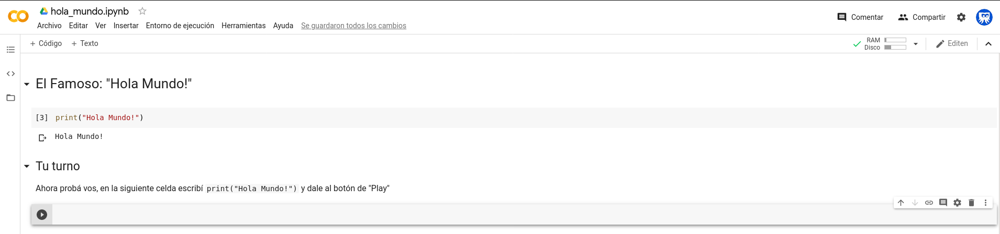
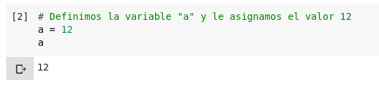
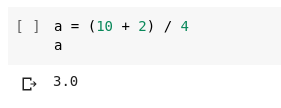
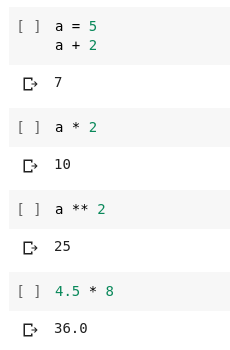
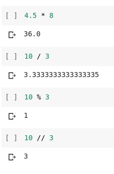
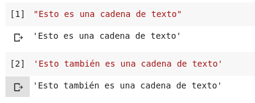
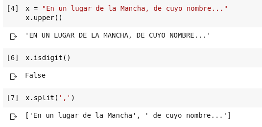
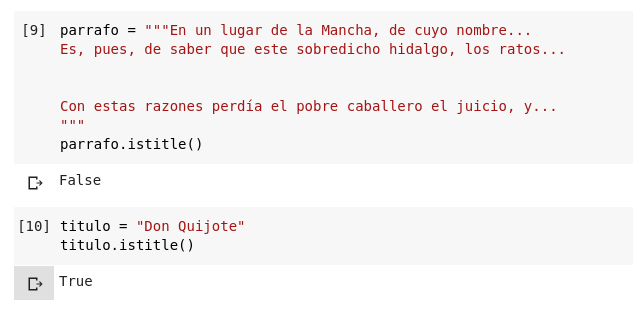

#DataSchool
Python
Primeros Pasos
Martes 28 de abril de 2020
10 a 12 (UTC-3) | 8 a 10 (UTC-5)
URL Presentación
https://bit.ly/dataschool-python1Archivos de Ejemplo
https://github.com/lecovi/dataschool-py1Descargar ZIP
¿Python?
Creado por Guido van Rossum a principios de los '90.
- Interpretado (Scripting).
- Tipado dinámico.
- Fuertemente tipado.
- Multiplataforma.
- Multiparadigma.
Características
- Sintáxis simple, clara y sencilla.
- Fácil de aprender.
- Dinámico.
- Gestión automática de memoria.
- Gran cantidad de librerías.
No recomendable
- Bajo nivel.
- Rendimiento crítico
Python Zen

Zen de Python
- Bello es mejor que feo.
- Explícito es mejor que implícito.
- Simple es mejor que complejo.
- Complejo es mejor que complicado.
- Plano es mejor que anidado.
- Disperso es mejor que denso.
- La legibilidad cuenta.
- Los casos especiales no son tan especiales como para quebrantar las reglas.
- Aunque lo práctico gana a la pureza.
Zen de Python
- Los errores nunca deberían dejarse pasar silenciosamente.
- A menos que hayan sido silenciados explícitamente.
- Frente a la ambigüedad, rechaza la tentación de adivinar.
- Debería haber una -y preferiblemente sólo una- manera obvia de hacerlo.
- Aunque esa manera puede no ser obvia al principio a menos que usted sea holandés.
- Ahora es mejor que nunca.
- Aunque nunca es a menudo mejor que ya mismo.
- Si la implementación es difícil de explicar, es una mala idea.
- Si la implementación es fácil de explicar, puede que sea una buena idea.
- Los espacios de nombres (namespaces) son una gran idea ¡Hagamos más de esas cosas!
Links de Interés
- Sitio Oficial: https://www.python.org/
- Comunidad PyAR: http://python.org.ar/
- Tutorial: http://docs.python.org.ar/tutorial/
- Asociación Civil: https://ac.python.org.ar/
- The Hitchhiker’s Guide: https://docs.python-guide.org/
Instalación
Implementaciones:
- CPython
- Jython
- IronPython
- PyPy
- Brython
- RubyPython
Herramientas
A través del intérprete o ejecutando scripts.

Herramientas
- Editor de Texto: para escribir el código
- Terminal: para probar el código
- Intérprete: para jugar con cosas del código
- Entornos de Desarrollo Integrados: IDEs
- Notebooks
Google Colab
entonces...
Manos a la obra

El Famoso...
hola_mundo.ipynb Hola Mundo!

Texto plano
Escribimos la funciónprint() y le escribimos el mensaje "Hola Mundo!"
print("Hola Mundo!")
Funciones
primeros_pasos.ipynbUna función es un conjunto de instrucciones que se llaman con un nombre, acepta argumentos y devuelve un valor.
print("Hola Mundo!")
- Nombre:
print - Argumento:
'Hola Mundo!' - TIP:
()
Variables
Para definirlas hay que elegir un nombre y darle un valor con el signo=
Expresiones
Las variables pueden contener cualquier expresión válida.
Palabras reservadas
sintaxis_basica.ipynbPython tiene 35 palabras reservadas: keywords.py
False await else import pass
None break except in raise
True class finally is return
and continue for lambda try
as def from nonlocal while
assert del global not with
async elif if or yield
Sintáxis Básica
Comentarios inline se indican comenzando con #.
La separación de bloques se realiza por medio de identación (por lo general, 4 espacios).
También viene con +60 funciones incorporadas.
Tipos de Datos Básicos
- Númericos:
- Enteros.
- De Coma Flotante.
- Complejos.
- Cadenas de Texto:
- Strings.
- Bytes.
- Raw.
- Lógicos
Operadores Aritméticos
- Suma:
+ - Resta:
- - Multiplicación:
* - División:
/ - Módulo:
% - División Entera:
// - Potenciación:
**
Operando con números
 Cadena de Texto
Se definen entre"" o ''
Y se les puede dar formato

Métodos de cadenas
strip(): "limpia" espacios al principio o al final.split(): divide la cadena.find(): busca en la cadena.startswith(): busca si comienza con.endswidth(): busca si termina con.find(): busca en la cadena.
Métodos de cadenas
lower(): convierte en minúsculas.upper(): convierte en mayúsculas.isdigit(): ¿es numérica?.isalpha(): ¿es alfanumérica?.islower(): ¿está en minúsculas?.isupper(): ¿está en mayúsculas?.
Usando los métodos
Usando los métodos
Ingreso de datos
- Texto:
input("Mensaje").
Con
input() siempre se ingresa un str, si se quiere tener un valor numérico hay que convertirlo explícitamente int(), float()
#DataSchool
Introducción a Python
https://bit.ly/lecovi-siteLeandro E. Colombo Viña | @lecovi
leo <at> bitson.group

Este trabajo está licenciado bajo Creative Commons Attribution-NonCommercial-ShareAlike 4.0 International License.